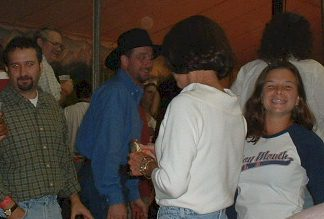
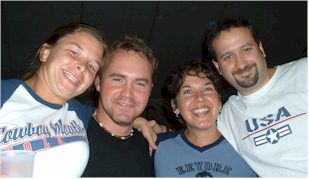
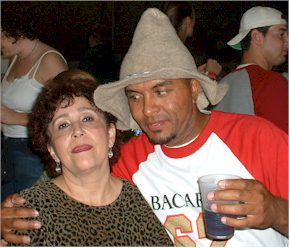
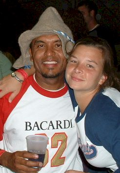
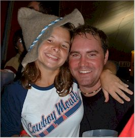

October 18 - 21, 2003
| Most everyone knows, one of my very favorite
festivals is Tulsa's Oktoberfest (second in my heart only to Jazz Fest in
N'awlins) and my favorite live band is Cowboy Mouth. Amy Jones is
also a big Cowboy Mouth fan, so much so that she was willing to fly up
from Houston to go with me to a concert in Fayetteville, AR.
Fayetteville is where I went to college and is 30 miles from my
hometown.
So, we devised an elaborate trip that started with her flying into
Tulsa and me whisking her off to Oktoberfest, where we met up with some
old friends from ConocoPhillips. The following day we spent with my
parents in Westville, then the third day we shopped in Fayetteville with
my Mom and attended the concert that night. The last day was our
travel day as we headed back home and to the real world. It was a
fun trip! |
|
|
 |
|
| For some reason they always have bellydancers at Oktoberfest. I didn't know Germans were into this... |
Here's Amy and Mark Nel with some people I don't know |
 As always happens when you travel with Amy, we made |
 |
| More of our new friends | |
 |
 |
|
Amy with our new friends |
|
| We took some pictures of me, Amy, and Mom on our shopping day, but I lost those. |
The saddest thing is that I forgot my camera for the concert and I was pulled up on stage. Like anyone will believe that now... |
|
Oh well, we did have a great time. Thanks for coming up Amy! |
|